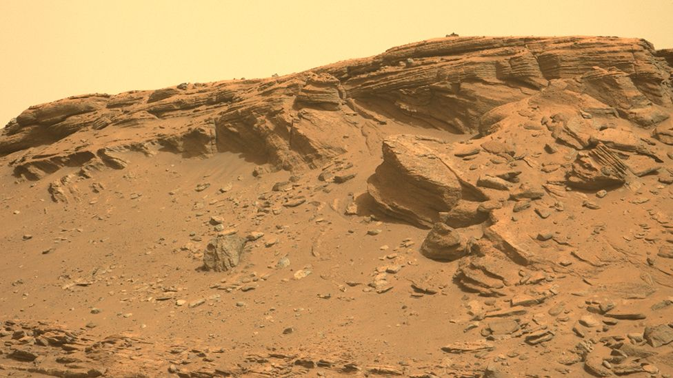

Nasa's Perseverance rover has reached a big moment in its mission on Mars. Tuesday will see the six-wheeled robot begin the climb up an ancient delta feature in the crater where it landed. It will roll uphill, stopping every so often to examine rocks that look to have the best chance of retaining evidence of past life on the planet. On its way back down, Perseverance will collect some of these rocks, placing the samples at the base of the delta to be retrieved by later missions. The goal is to bring this material back to Earth in the 2030s for detailed inspection. "The delta in Jezero Crater is the main astrobiology target of Perseverance," said deputy project scientist, Dr Katie Stack Morgan. "These are the rocks that we think likely have the highest potential for containing signs of ancient life and can also tell us about the climate of Mars and how this has evolved over time," she said. The rover made its spectacular landing in the middle of Mars' 45km-wide Jezero Crater on 18 February last year. Since then it's been testing its tools and instruments, flying an experimental mini-helicopter, and gathering a general impression of its surroundings. But the robot's chief purpose in going to the near-equatorial bowl on the Red Planet has always been to study the huge mound of sediments in the west of Jezero. Long suspected to be a delta, based on satellite imagery, Perseverance's initial observations on the ground have now confirmed this assessment. 